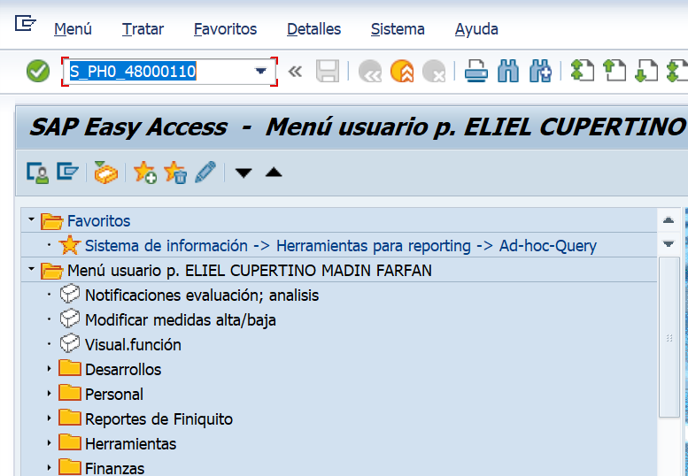
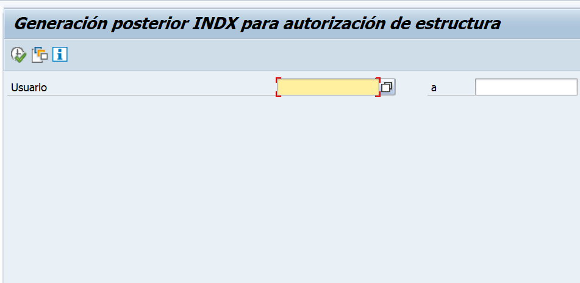
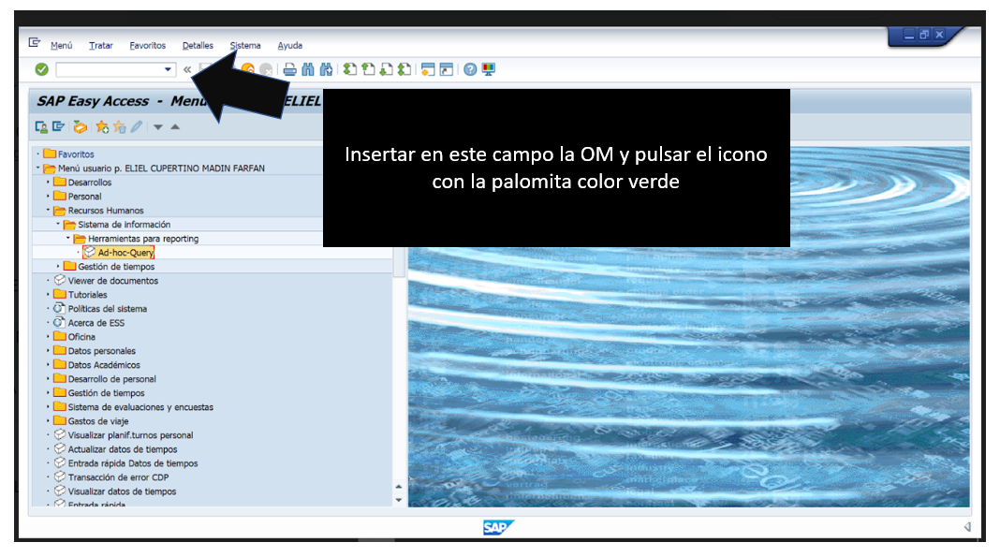
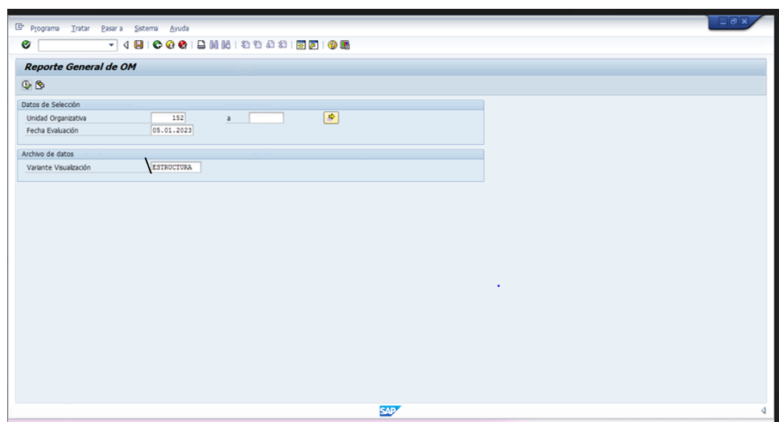
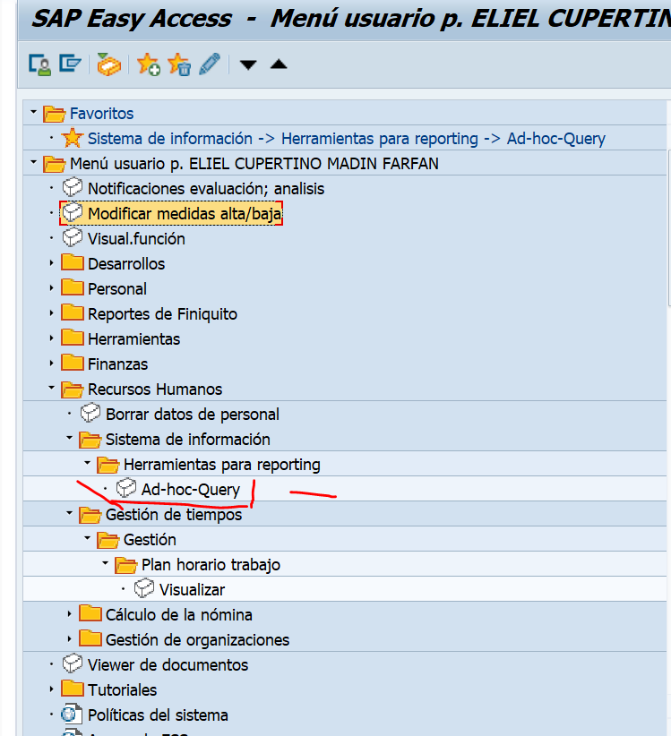
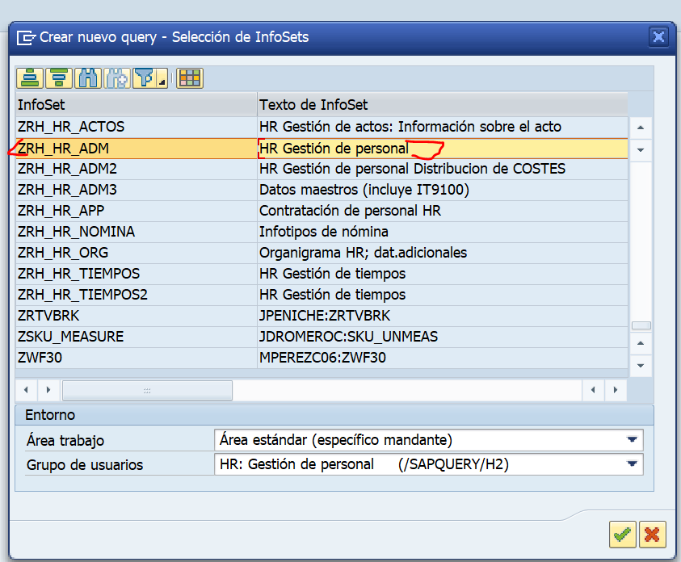
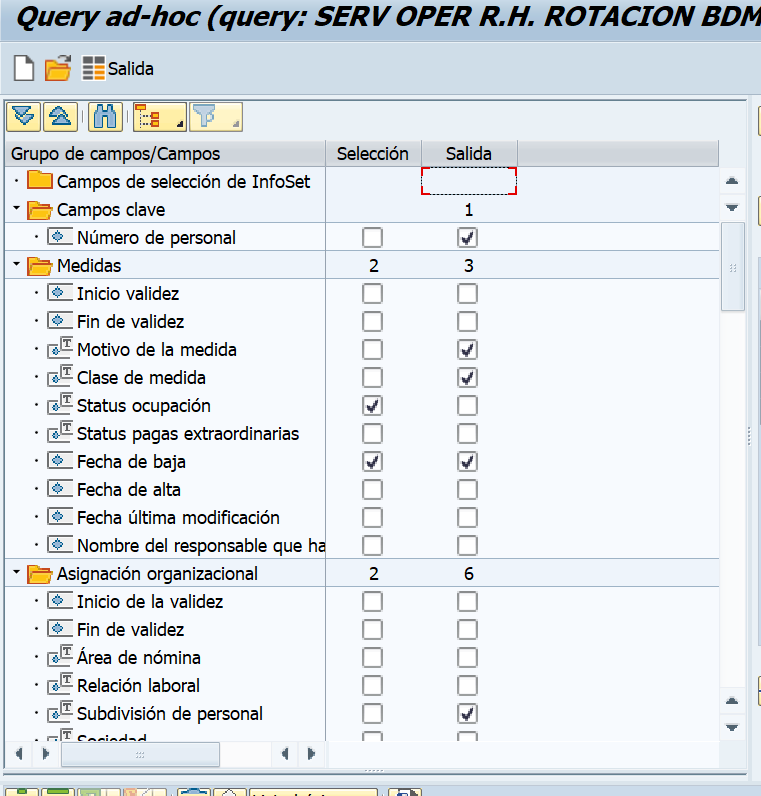
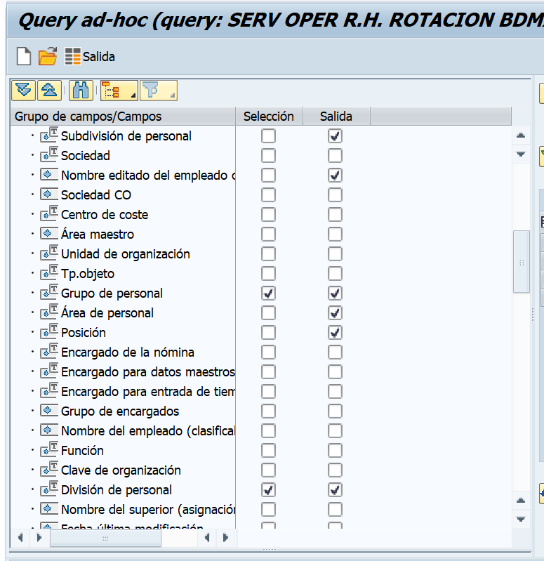

Reporte de cobertura y rotación ||| RH-Logística

El primer paso antes de descargar reportes de SAP, es realizar una actualización esto se logra utilizando la transacción “S_PH0_48000110”
Una vez adentro de este menú, deberemos colocar nuestro usuario y esperar a que este se actualice(pulsar el reloj con una palomita verde para iniciar el proceso)
La descarga de la OM se realiza atraves de SAP mediante la transacion:ZRH_GENERAL_OM
Al cargar se abrirá un menú en donde se colocará en unidad Organizativa el numero "152" que representa a la logística, en fecha de evaluación "la fecha del día domingo" de la semana que se esté realizando el reporte y en Variante de visualización "\ESTRUCTURA"
Cuando se termine de generar el reporte y se descargue se procede a realizar una limpieza del documento, seleccionando las casillas en blanco de las columnas; “CC Asignado al empleado ID, CC Unidad org, CC Posición” La manera de eliminarlas NO es eliminando las filas que están en blanco, es seleccionando la columna de cada centro de costo que contiene celdas en blanco y pulsando el botón de suprimir para asegurar el proceso también se debe pulsar la tecla delete.
Una vez realizado la limpieza de las tres columnas se agrega una columna adicional en donde se utiliza la construcción de una función de Excel” =IF(AA2>0, AA2, IF(AD2>0,LEFT(AD2,10),LEFT(AB2,10))) ”
Lo que representa esta función es el centro de costo, en donde se toma como primer valor CC Asignado al empleado ID, si no encuentra este valor, extrae del CC Posición los primeros 10 caracteres que conforman al string de izquierda a derecha, si no encuentra este valor, extrae del CC Unidad org los primeros 10 caracteres que conforman al string de izquierda a derecha.
Se coloca una columna adicional donde del resultado del centro de costos obtenido de la formula anterior, se refiere a la siguiente formula de Excel =MID(AC178,4,4), esta fórmula representa la obtención de un string empezando en la posición 4 y trayendo 4 caracteres. El resultado de esta función representa la división de personal, es decir la ubicación en donde se encuentra la persona.
Los activos con bloqueo de nomina se obtienen de la descarga de un query en Sap para acceder a esta configuración primero se debe acceder a “Ad-hoc-Query”
Posterior se selecciona “ZRH_HR_ADM ||| HR Gestión de personal”
Una vez adentro la configuración de selección del personal quedaría estructurado seleccionando cuatro campos.
En el “Numero de personal” se selecciona selección y salida , en selección se les pasa los valores de los números de colaborador de la OM.
En “Status de ocupación” se selecciona selección eligiendo el número 3 que representa el personal activo.
Y en “Indicador número personal bloqueado para” se selecciona de salida que nos traerá el personal que esta o no, con bloqueo de nómina.
Tambien se requiere si es personal de Panta o Eventual para posterior hacer un cruce con la OM
Una vez obtenido el personal activo con bloqueo de nómina se agrega una nueva columna al archivo de la OM y se realiza un cruce con el archivo de activos con bloqueo de nómina donde se identifica, en el documento de la OM el personal con bloqueo de nómina.
Las bajas se obtienen de un query en Sap la configuración que se utiliza para lograrlo es la siguiente:
 Ambas plantillas son documentos que proporciona el área de planeación
Ubicación del documento: "https://drive.google.com/drive/folders/1McTqcHujKfxRJ5PADfHTaoDebQiFergE"
Dentro de estas hojas de calculo se encuentra una hoja nombrada “Visualización” es en esta hoja donde se concentra la plantilla autorizada
En el libro de "Cuadro Básico_Plantilla Log Central 2023_D" Encontaremos los centros nacionales
En el libro de "Cuadro Básico_Plantilla Log Regional 2023_D" Encontaremos los centros Regionales